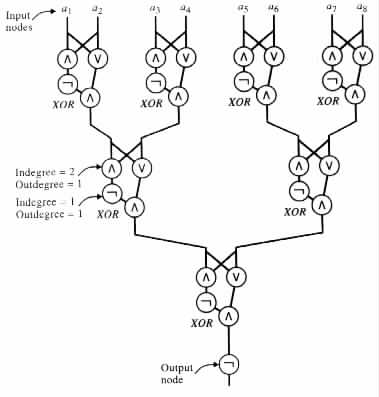
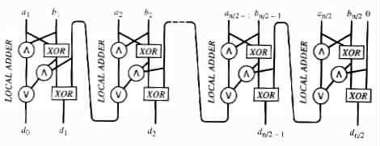
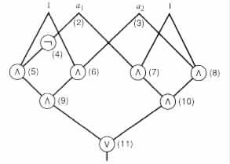

Families of Circuits
Representation of Circuits
Many abstract models of parallel machines have been offered in the literature, besides those of PRAM's. However, unlike the case for the abstract models of sequential machines, there is no obvious way for relating the different abstract models of parallel machines. Therefore, the lowest common denominator of such models, that is, their hardware representations, seems a natural choice for analyzing the models for the resources that they require.
Here the representations are considered in terms of undirected acyclic graphs, called combinatorial Boolean circuits or simply circuits. Each node in a circuit is assumed to have an indegree no greater than 2, and an outdegree of unbounded value. Each node of indegree 0 is labeled either with a variable name, with the constant 0, or with the constant 1. Each node of indegree 1 is labeled with the Boolean function ¬. Each node of indegree 2 is labeled either with the Boolean functions Ù or Ú.
Each node of indegree greater than 0 is called a gate. A gate is said to be a NOT gate if it is labeled with ¬, an AND gate if labeled with Ù, and an OR gate if labeled with Ú. Nodes labeled with variable names are called input nodes. Nodes of outdegree 0 are called output nodes. A node labeled with 0 is called a constant node 0. A node labeled with 1 is called a constant node 1.
A circuit c that has n input nodes and m output nodes computes a function f: {0, 1}n ® {0, 1}m in the obvious way.
Example 7.3.1 The circuit in Figure 7.3.1
|

|
The circuit computes the parity function for n = 8 input values. The circuit provides the output of 0 for the case where a1 · · · a8 has an odd number of 1's. The circuit provides the output of 1 for the case where a1 · · · a8 has an even number of 1's.
The circuit's strategy relies on the following two observations.
Example 7.3.2 The circuit in Figure 7.3.2
|

|
The size of a circuit is the number of gates in it. The depth of a circuit is the number of gates in the longest path from an input node to an output node.
Example 7.3.3 In the circuit of Figure 7.3.1 each XOR has size 4 and depth 3. The whole circuit has size 29 and depth 10.
In the circuit of Figure 7.3.2 each LOCAL ADDER has size 11 and depth 6. The whole
circuit has size 11n/2 and depth 5 + 2(n/2 - 2) + 3 = n + 4.
C = (c0, c1, c2, ¼ ) is said to be a family of circuits if cn is a circuit with n input nodes for each n ³ 0. A family C = (c0, c1, c2, ¼ ) of circuits is said to have size complexity Z(n) if Z(n) ³ (size of cn) for all n ³ 0. The family is said to have depth complexity D(n) if D(n) ³ (depth of cn) for all n ³ 0.
A family C = (c0, c1, c2, ¼ ) of circuits is said to compute a given function f: {0, 1}* ® {0, 1}* if for each n ³ 0 the circuit cn computes the function fn: {0, 1}n ® {0, 1}k for some k ³ 0 that depends on n. fn is assumed to be a function that satisfies fn(x) = f(x) for each x in {0, 1}n.
A function f is said to be of size complexity Z(n) if it is computable by a family of circuits of size complexity Z(n). The function f is said to have depth complexity D(n) if it is computable by a family of circuits with depth complexity D(n).
A family C = (c0, c1, c2, ¼ ) of circuits is said to decide a language L in {0, 1}* if the characteristic function of L is computable by C. (f is the characteristic function of L if f(x) = 1 for each x in L, and f(x) = 0 for each x not in L.) The size and depth complexities of a language are the size and depth complexities of its characteristic function.
Example 7.3.4
The language { a1 · · · an | a1, ¼ , an are in {0, 1}, and a1 · · · an has an even number of 1's }
is decidable by a family of circuits similar to the circuit in Figure 7.3.1. The language has
depth complexity O(log n), and size complexity O(n/2 + n/4 + · · · + 1) = O(n).
In what follows, we will assume that each circuit c has a representation of the following form. Associate the number 0 with each constant node 0 in c, the number 1 with each constant node 1 in c, and the numbers 2, ¼ , n + 1 with the n input nodes of c. Associate consecutive numbers starting at n + 2, with each of c's gates. Then a representation of c is a string of the form E(u1) · · · E(um)F(v1) · · · F(vk).
u1, ¼ , um are the gates of c, and v1, ¼ , vk are the output nodes. E(u) is equal to (g, t, gL, gR), where g is the number assigned to gate u, t is the type of u in {¬, Ú, Ù}, and gL and gR are the numbers assigned to the immediate predecessors of u. In particular, gL = gR when t = ¬. F(v) is equal to (g), where g is the number assigned to gate v.
Example 7.3.5 Figure 7.3.3
|

|